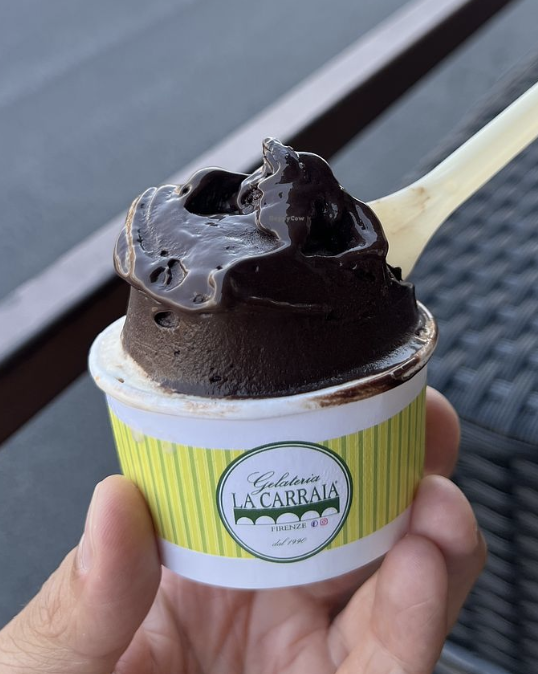
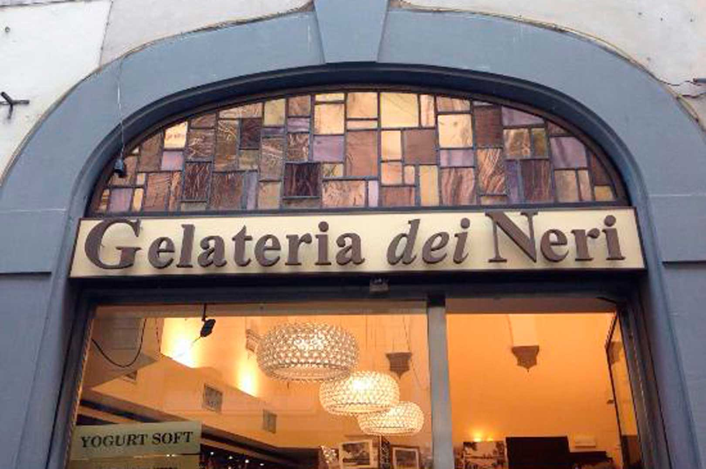
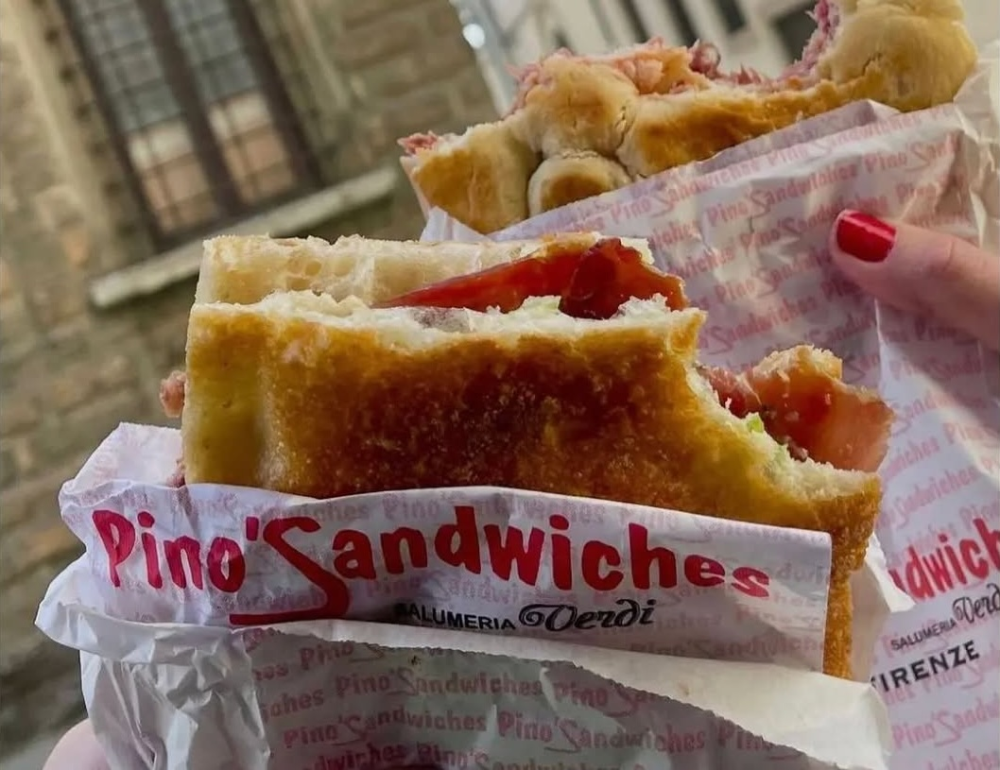
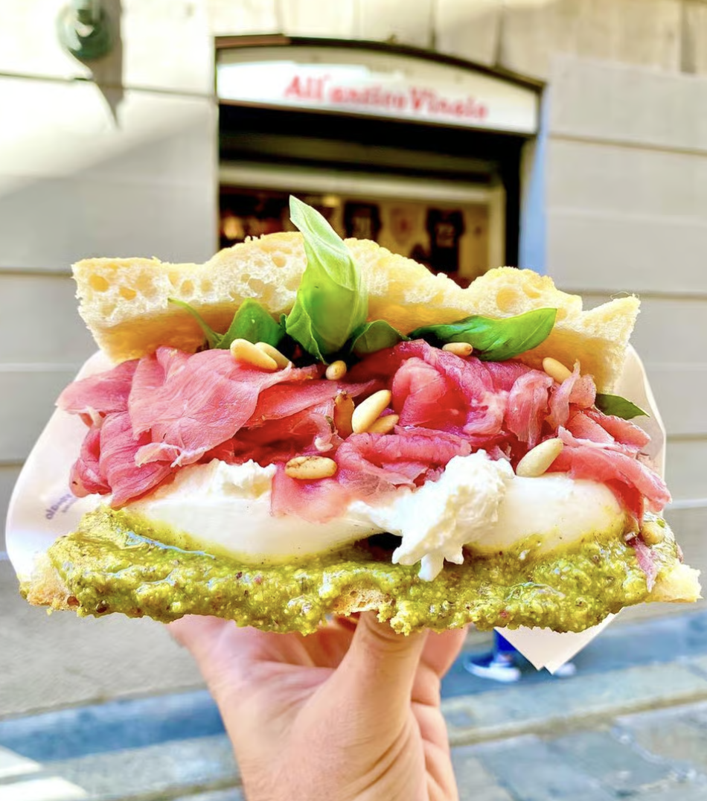
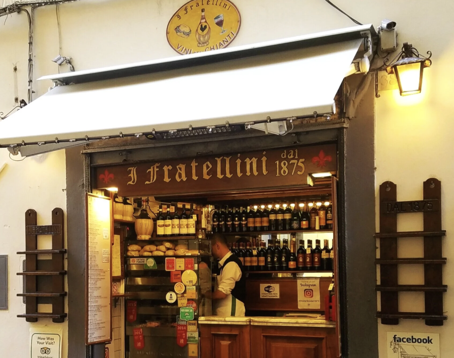
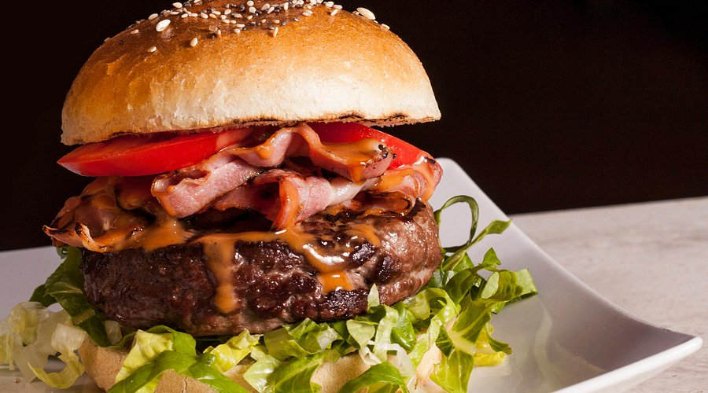
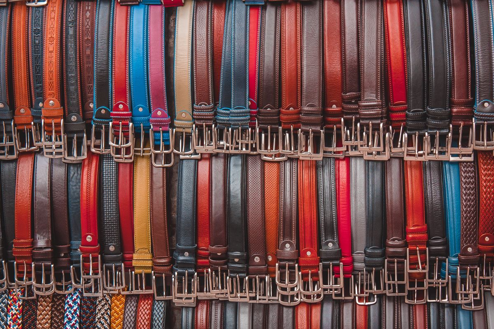
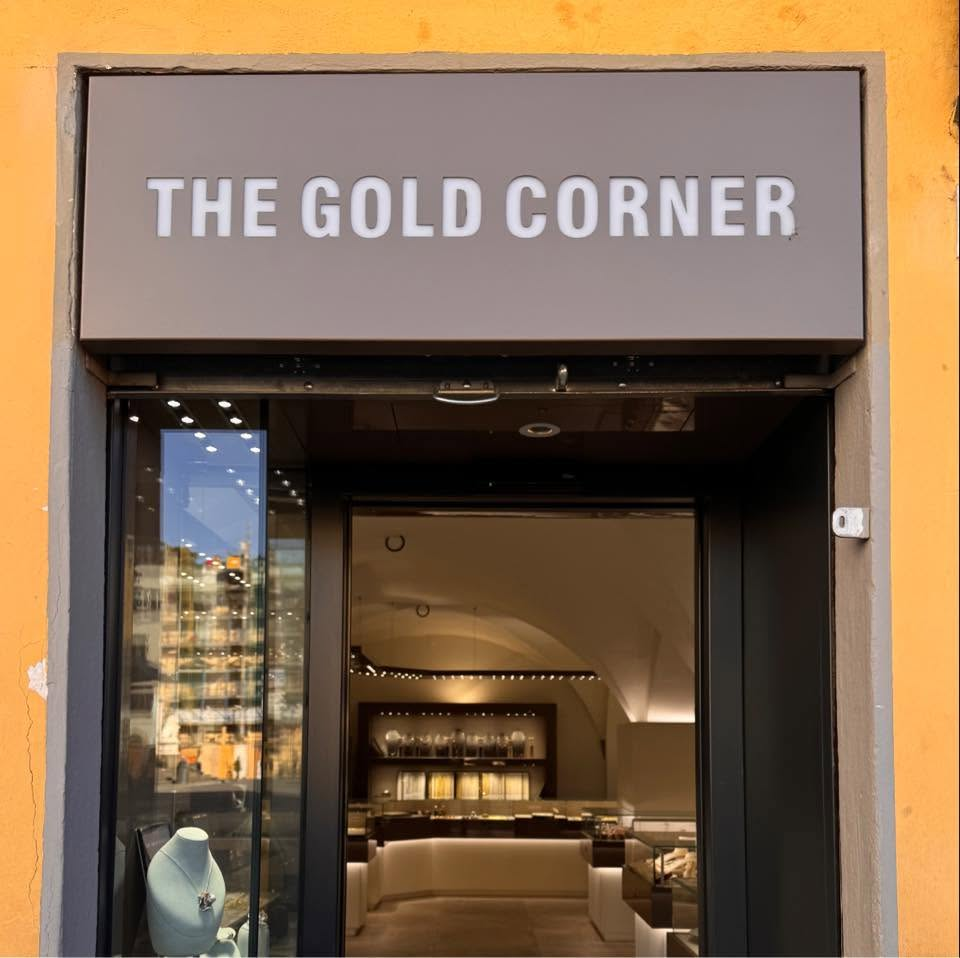
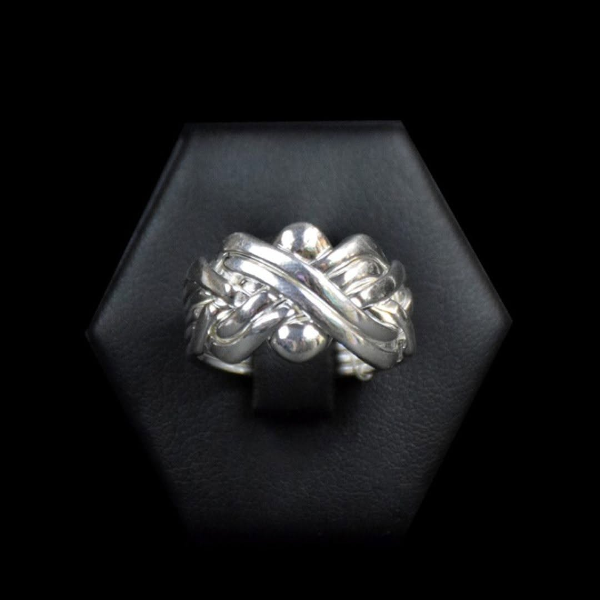
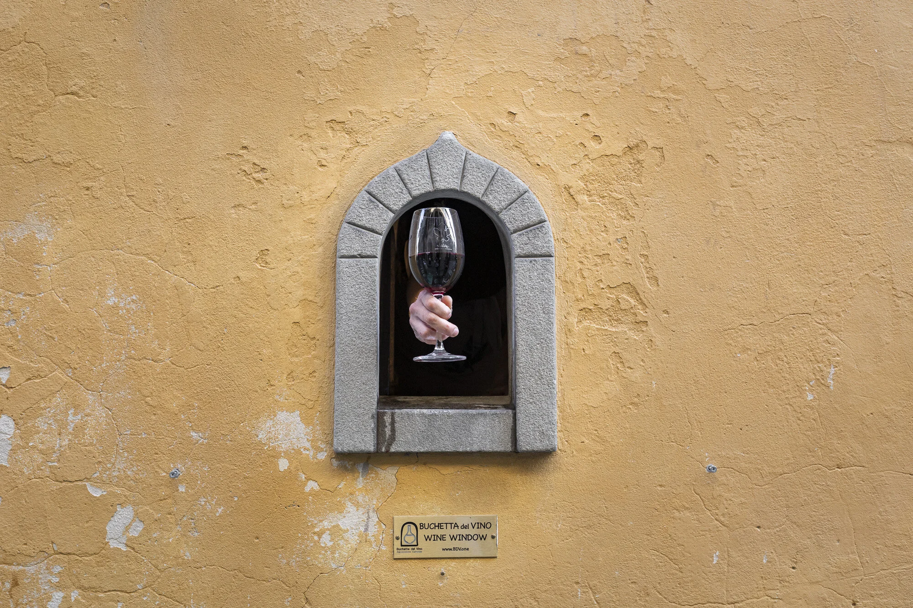

One of my favourite places for gelato. Florence played an important role in the history of gelato during the Renaissance, with the Medici court helping popularise frozen desserts across Europe. Today, La Carraia is known for generous portions, excellent value and consistently great flavours.

A long-time favourite with both Florentines and visitors, offering everything from traditional pistachio and hazelnut to more creative seasonal flavours. It's the sort of place locals still happily recommend, making it an ideal stop while wandering Florence's medieval streets.

Founded in 1929 by Serafino Vivoli, who left his family's farm in Pelago to try his luck in Florence, Vivoli began as a simple dairy on Via Isola delle Stinche in the Santa Croce district — selling coffee and whipped cream to the craftsmen and locals of the neighbourhood. Nearly a century later it remains one of Florence's most beloved gelaterias.
It's best known for La gran crema al caffè — their take on the affogato, encapsulating the perfect contrast between sweet and bitter, hot and cold. A perfect stop when you need both a coffee and something sweet.

One of Florence's favourite local sandwich shops, Pino's has built a loyal following thanks to generous fillings, fresh ingredients and the owner's unforgettable personality. While other sandwich shops attract the crowds, this is where many guides, students and locals still head for lunch.

The original shop that turned Florentine schiacciata into a worldwide phenomenon. Schiacciata literally means "pressed flat" — a traditional Tuscan flatbread that's crisp on the outside, soft inside and perfect for generous fillings. Founded here on Via dei Neri in 1989, it has since grown into an international brand with locations across Europe, North America and the Middle East. This is where it all started. Expect queues, but they move quickly.

I Fratellini has occupied the same tiny opening in a wall on Via dei Cimatori since 1875. It is, in every sense, a hole in the wall — a narrow hatch, no seating, no menu board beyond a handwritten list on the wall. You order, you step aside, you eat on the street.
In a city full of famous sandwich shops, this is the one that hasn't changed. Locals, students and guides in the know have been coming here for generations. The name means "the little brothers" — a nod to its origins as a small family operation that somehow outlasted everything around it.

Established in 1962, the Red Garter is one of Florence's longest-running international bars and restaurants. It opened during a time when American culture was becoming increasingly popular in post-war Italy and even survived the devastating 1966 Florence Flood, when much of the historic centre was submerged by the Arno River.
Today it's known for steaks, burgers, live music and karaoke. If, after a week or two of Italian food, you're craving a little comfort food or a taste of home, this is a great place for a sit down lunch & beer.

Leatherworking has been part of Florence's identity since the Middle Ages, when powerful artisan guilds helped make the city one of Europe's wealthiest trading centres. Florence remains famous for quality leather craftsmanship, and Peruzzi continues that tradition with beautifully made bags, wallets and jackets.

Florence is one of the world's great jewellery cities, with a tradition stretching back hundreds of years. While the Ponte Vecchio is famous for its jewellers, I've found The Gold Corner to be a much more relaxed place to shop. There's a great selection, no need to fight the crowds, and the staff are happy to explain the pieces without any pressure. It's where I recommend guests begin their search for a lasting Florentine keepsake.

One of Florence's great leather & jewellery shops, Leonardo's specialises in a lot, including the famous puzzle ring — multiple interlocking bands that come apart completely before being reassembled. The design is centuries old and has become a memorable keepsake for visitors looking for something you cant find elsewhere and with a story that stands out!

One of Florence's most charming traditions. During the 16th and 17th centuries, wealthy Florentine families built tiny openings into the walls of their palaces so they could sell wine directly from their own estates. These wine windows allowed merchants to avoid middlemen and became especially useful during outbreaks of plague, when goods could be exchanged with minimal contact.
More than 150 wine windows still survive across Florence, and many have recently reopened. Ordering a glass through one is one of the city's most unique experiences. There's one near our meeting point at Piazza dei Peruzzi, and another at Vivoli Gelato.
More about wine windows: bdv.one/english Instagram